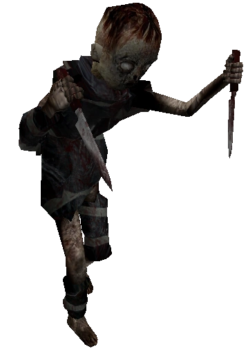
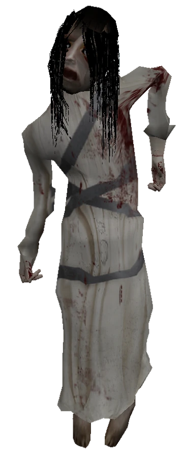
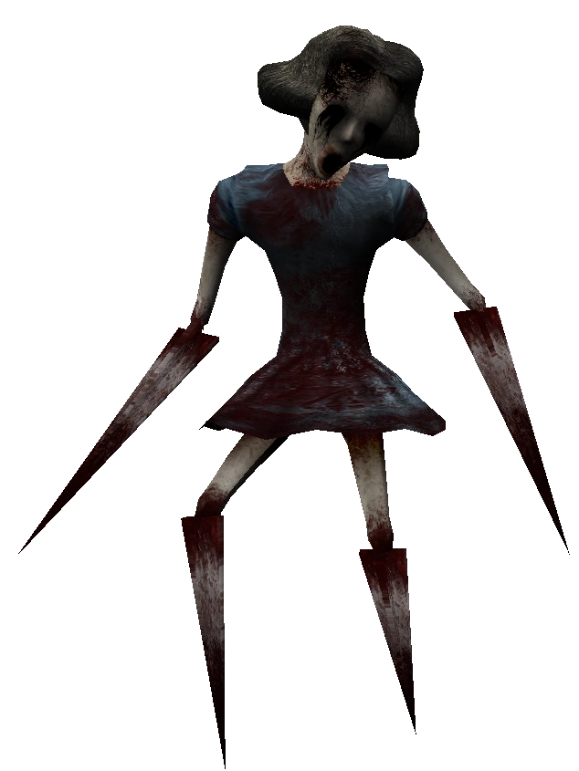
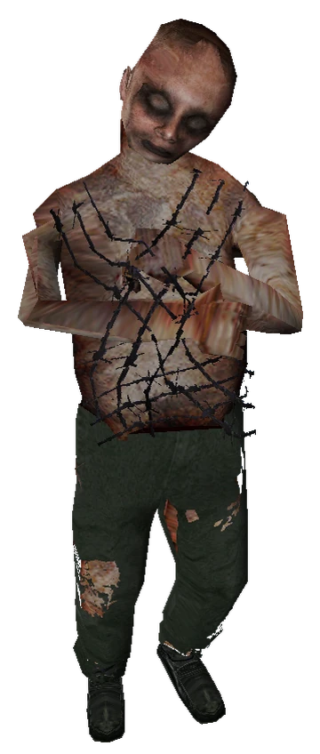
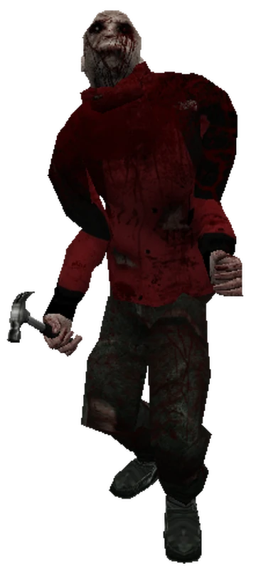
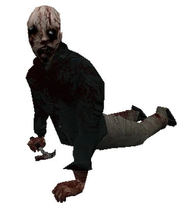

Children
Common enemies found in the beginning levels of the game. They are corpses of children wielding two knives in each hand.
Drowned
Found at the beginning of the game, her long-range attack "suicical influence" will force the player to hold the gun to himself and shoot (if wielding one). The attack can be resisted by button spamming the "F" key. If the player attempts to get too close to attack her, a baby will emerge through her womb wielding a knife and it will attack close-up.
Faster
This enemy, with sharp needle-esk arms and legs will make a sharp tapping noise as she approaches you. However, the biggest indicator of her presence is her agoinizing wails. If you make enough attack damage to her without actually killing her, she will admit her own defeat by bludgening her eyes out with her hands. This may have to do with her blackened eye design.
Sewmo
Sewmo is a common enemy that can be found at the beginning of Chapter 2 in the sewers. He will most likely be found with several other Sewmos.
Slower
Slower is a tall, slouched slow-moving enemy that will be found in the beginning of the game at the apartments level. He wields a hammer in his right hand and can do a considerable amount of attack damage.
Crawler
Similarly to the slower, the crawler can be found wielding a hammer in his right hand. The difference between the two is that the crawler, however, crawls on his hands and knees (as the name suggests.) He can be found crawling in vents or tight areas.